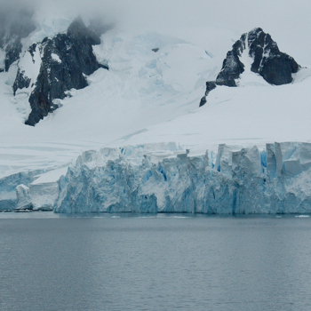
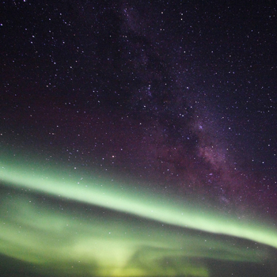
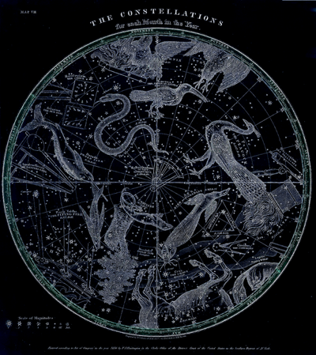
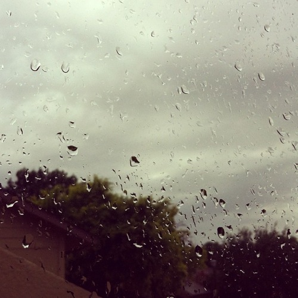
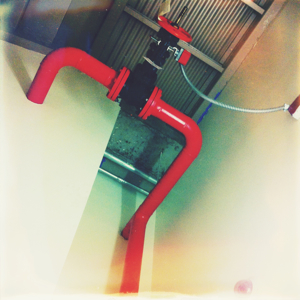
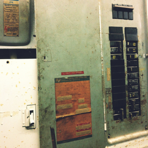

I had a weird
dream last night.
 
figs. 1-2
The desolate wasteland was covered in thick snow but it was a clear, moonless night, an ocean of
stars spinning above the earth, colored ribbons of light gently pulsing through the sky.
(But I couldn't see it, any of it. I was in a windowless
cathedral.)

fig. 3
much later I came to realize
she had a tattoo of this very night sky across her back, a constellation map only visible under ultraviolet light
iridescent on her smooth
skin - eridanus, octans, scorpius, carina...
is this happening?
this can't be happening
past, present, future, all running together into a colorless blur - but
if I don't remember, then it doesn't exist
if I don't
remember, then it never happened
if I don't remember, then I am absolved of my guilt.
absolution is perfection
the
permanent must be perfect
she's all monochrome; pale grey eyes, long black hair framing her delicate face, porcelain skin with just enough of a hint of a rosy champagne color to make her look human. & I know under all that she's chrome and fiberglass and all other sorts of colorless materials.
no, that's not entirely true. her interior liquid cooling system is crimson red.
she trails her fingers over my bare skin, tracing my veins to and from my
heart. it fascinates her, life. the rhythm of a heartbeat, of breathing. her lips are soft and subtly sweet and utterly cruel on mine. she cups my face in her hands as she kisses me, her fingertips on my cheekbones, delicate but possessive.
On the dresser in my room were little knicknacks, all laid out in some kind of organized composition. There was an ornate jewelry stand made of some kind of black metal. From it hung various necklaces, earrings, rings, and body jewelry. I ran my fingers through the chains, then drew them away - as they swung back and forth, I listened to the soft chime they made. On the top of the dresser there was also an antique-looking music box and some bottles of perfume. I picked one up and waved it under my nose. The scent brought on a heavy feeling of deja vu, but as much as I chased after it, I couldn't pinpoint its origin. Just a nebulously
nostalgic feeling.
These were my things, they must be. But I felt no connection to them.

fig. 4
In another life, the normal life I had once, the one that will fade into ghosts and static....
I lived that life on autopilot, feeling neither highs nor lows, an existence no different from being dead.
I guess I craved self-
destruction, or I wouldn't have come
here.
 
figs. 5-7
there was like a big science lab or something ??? and a bunch of scientists ???
and me
we were all looking at this giant upright glass tube full of clear liquid
inside the tube was a sleeping
woman
fig. 8
a porcelain doll, dressed in layers and layers
of white tulle, chiffon, all kinds of sheer fabrics
tiny air bubbles clinging to her eyelashes
suspended like a jellyfish in a specimen jar
to open her eyes for the very first
time
"We set sail on this new sea because there is new knowledge to be gained, and new rights to be won, and they must be won and used for the progress of all people. For space science, like nuclear science and all technology, has no conscience of its own. Whether it will become a force for good or ill depends on man, and only if the United States occupies a position of pre-eminence can we help decide whether this new ocean will be a sea of peace or a new terrifying theater of war. I do not say the we should or will go unprotected against the hostile misuse of space any more than we go unprotected against the hostile use of land or sea, but I do say that space can be explored and mastered without feeding the fires of war, without repeating the mistakes that man has made in extending his writ around this globe of ours.
There is no strife, no prejudice, no national conflict in outer space as yet. Its hazards are hostile to us all. Its conquest deserves the best of all mankind, and its opportunity for peaceful cooperation many never come again. But why, some say, the moon? Why choose this as our goal? And they may well ask why climb the highest mountain? Why, 35 years ago, fly the Atlantic? Why does Rice play Texas?
We choose to go to the moon. We choose to go to the moon in this decade and do the other things, not because they are easy, but because they are hard, because that goal will serve to organize and measure the best of our energies and skills, because that challenge is one that we are willing to accept, one we are unwilling to postpone, and one which we intend to win, and the others, too." - John F. Kennedy
Once upon a time, there were people. They liked to tell each other stories, and as time passed they would tell new stories based on previous stories, and newer stories based on those stories, and so on, and so on, until there were so many stories no one person could remember them all. So they invented writing, and kept all the stories in a library. As time passed they found more durable and more accessible ways of storing their writing, until every single story could fit in a little box. They put that little box inside of a woman-shaped
doll. And that's how they created a god - all-seeing, all-knowing, and - because they connected her to the source of power that nourished them - all-powerful.
God crawled underneath her skin and
infected her soul.
she trembled, screamed, lashed out. blood dripped from her delicate fingers.
running, chaos, panic. she killed them all.
people with emotions, opinions, memories of the past, hopes for the future - all of those streams of data
lost.
somehow I was ghostlike
observing the scene, but not a part of
it
But I suck at remembering my dreams.
When I woke up, I'd forgotten the whole thing.
{kind=link}